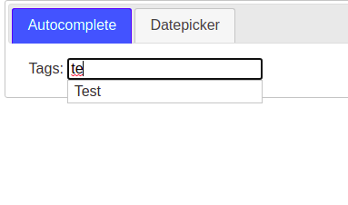
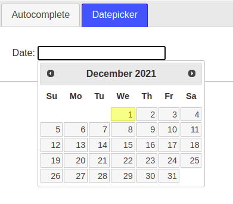
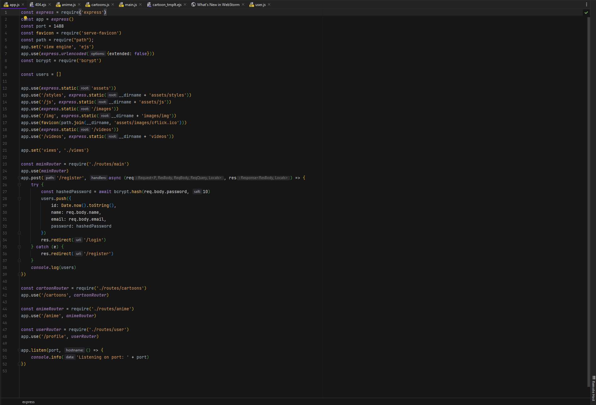
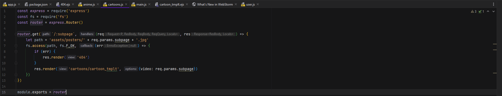
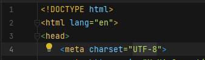
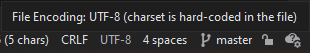
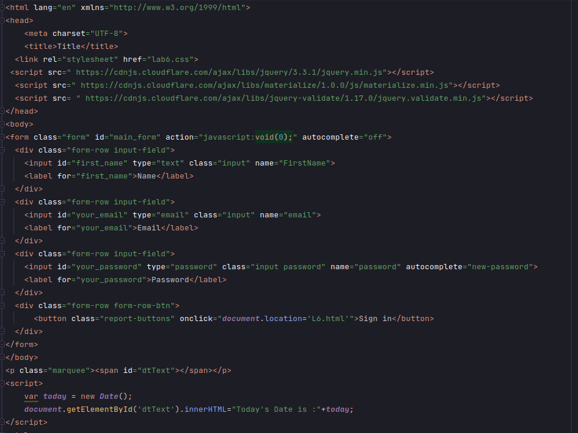
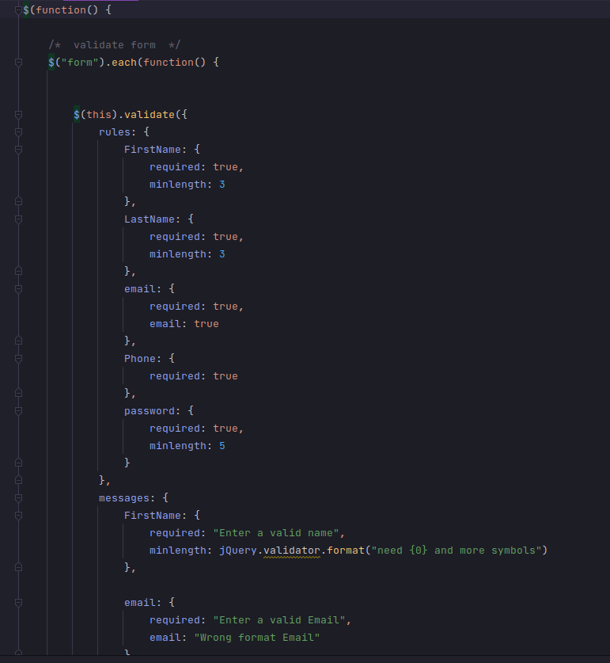

Тема лабораторної роботи:
WEB-сервери та принципи їх роботи з користувачем.
Серверні WEB-застосування.
Мета:
Придбати практичні навички встановлення та конфігурування WEB-сервера.
Для цього завдання ми використовували JQuery.
Рядок з підказками.Для цього ми написали певний перелік слів.І якщо ми будемо щось вводити з цього ереліку
буде виводитись підказка.

Вибір дати.

І 3 елементом є перемикання між вкладками ,на кожній знаходиться інший динамічний елемент.
Для виконання цього завдання ми використовували Node.js.
Підключаємо всі потрібні модулі і налаштовуємо сервер Express.


Unicode Transformation Format, 8-bit - "формат перетворення Юнікоду, 8-біт") - поширений стандарт кодування
символів,
що дозволяє компактніше зберігати і передавати
символи Юнікоду, використовуючи змінну кількість байт (від 1 до 4),
і забезпечує повну зворотну сумісність з 7-бітним кодуванням ASCII.


HTML-код:

JS-файл

Висновки:
Отже, у цій лабораторній роботі ми придбали практичні навички встановлення
та конфігурування WEB-сервера, для встановлення обрали Node.js,
тому що зараз вона є більш новішою та поширенішою; налаштували.
Виконали поставлені в лабораторній роботі задачі. Зробили звіт.